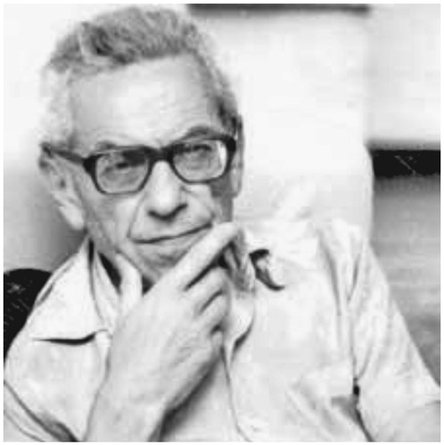
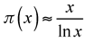
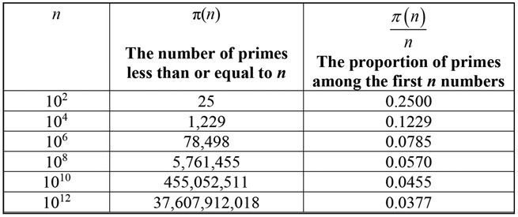
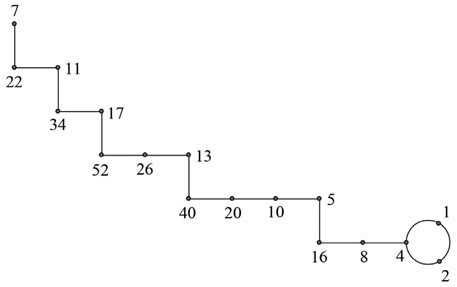
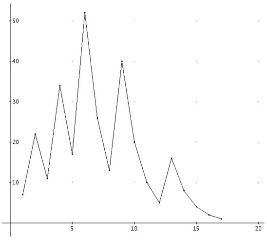

Paul Erdős: Hungarian (1913–1996)
It is not uncommon that people who have a true genius mentality are often socially unusual. There is probably no better example of this than the Hungarian mathematician Paul Erdős, who had no stable residence, traveled endlessly visiting one mathematician after another while carrying all his belongings in one suitcase. It was clear that all he cared about was mathematics—making conjectures and proving them as theorems. He connected with most of the world-famous mathematicians of his lifetime. However, curiously enough, he published profusely and very often with other mathematicians as coauthors. One of the many legacies that he left behind is what is known today as the Erdős number, which is assigned to mathematicians as follows: If a mathematician coauthored an article with him, he or she had an Erdős number 1. If a mathematician coauthored an article with another mathematician who already had an Erdős number of 1, then he or she was assigned an Erdős number 2. If a mathematician coauthored an article with a mathematician who already had an Erdős number 2, then he or she would be assigned an Erdős number 3, and so it would continue. Of course, Paul Erdős himself had Erdős number 0. In other words, there is great prestige in mathematical circles of having any Erdős number at all. As a matter of fact, Albert Einstein had an Erdős number 2. Incidentally, the American Mathematical Society provides a free online tool to compute the Erdős number of an author.1 Nowhere else in the mathematics world does this kind of jubilation take place.

Figure 47.1. Paul Erdős.
Paul Erdős spent almost all of his waking hours doing mathematics either by himself or in conversation with others. Oftentimes, he spent eighteen hours a day engrossed with mathematics. It is believed that he collaborated with more than 500 mathematicians and wrote more than 1,500 mathematical papers during his lifetime. This is likely one of the largest productions of mathematics contributions in history.2
Paul Erdős was born in Budapest, Hungary on March 26, 1913, to parents who both were high school mathematics teachers. He was particularly treasured by his parents, since his two sisters died of scarlet fever in their youth on the day of his birth. His childhood began in a rather strange fashion, since his father was a prisoner of war in Siberia till 1920, and so to support the family his mother needed to leave him alone at home, where he entertained himself by looking at mathematics books that were lying around the house. And at a very early age he showed an incredible facility for doing mathematical calculations in his head, such as multiplying two three-digit numbers in his head at age three. When his father returned from Siberia, he recognized his son’s talents and began to move them along so that he started to embrace such topics as number theory, infinite series, combinatorics, and set theory.
By the age of seventeen, Erdős entered the Pázmány Péter Catholic University of Budapest, where he had already began publishing articles, such as a proof of Chebyshev’s theorem, which states that for any integer n > 3, there always exists at least one prime number p, where n< p< 2n – 2, were stated another way, if n > 1, then there is always at least one prime number p that is between n and 2n.
By age twenty-one, he completed his undergraduate work and received his doctorate in mathematics. With the rise of anti-Semitism in Hungary in 1934, Erdős decided to leave the country and begin a four-year postdoctoral fellowship at the University of Manchester in England. In 1938, he accepted a one-year appointment at the Institute for Advanced Study at Princeton. One of his great achievements there was to participate in the development of the field of probabilistic number theory. After his stay at Princeton he began to travel around the United States, visiting Purdue University, Stanford University, Notre Dame University, and Johns Hopkins University, while turning down full-time positions at any one of these, so that he could work with a multitude of mathematicians of his choice and when he wanted to. This was the beginning of his nomadic travels that took him to more than 25 countries throughout the world. He had no family to concern himself with, and stayed with mathematicians as long as the challenges remained of interest to him. Often time, he would show up unannounced with suitcase in hand, prepared to stay as long as he or the host wished. He often worked more than eighteen hours a day and it is believed he was oftentimes stimulated by various medications to keep him alert.
In 1949, along with the Norwegian-American mathematician Atle Selberg (1917–2007), who had just begun his career as a professor of mathematics at the Institute for Advanced Study, Princeton, Erdős reached a point of jubilation when they proved the prime number theorem, which is a formula that gives the approximate value of the number of prime numbers less than or equal to any given positive real number x, which is usually notated as π(x).3 In other words, π(2) = 1—that is, there is only one prime less than or equal to 2—namely, the number 2 itself. As another example, π(10) = 4, which represents the following prime numbers less than or equal to 10, namely, 2, 3, 5, and 7. In general terms, the prime number theorem states that for larger values of x,

.4In figure 47.2, we show the number of primes less than or equal to n, for selected values.
For this work and other discoveries in prime number theory, Erdős was awarded the Cole Prize, which was presented to him by the Hungarian-American mathematician John von Neumann (see chap. 44) in 1951. Through the next several decades, Erdős seemed to concentrate his work on combinatorics, number theory, set theory, and geometry, just to name a few to demonstrate the broad spectrum of interest that dominated his life. When it came to graph theory, he helped organize the first international conference in 1959. As a further example of his unusual value system, living on very little money and using his relationship with the multitude of mathematicians that he visited to subsist, in 1984 he was awarded the prestigious (and lucrative) Wolf prize worth $50,000, of which he kept only $720 and gave the remainder to establish a scholarship program in Israel in memory of his parents.
Despite his odd lifestyle, Erdős was revered around the world. He received more than fifteen honorary degrees and has been elected as a member of the scientific academies of eight countries, including the US National Academy of Sciences and the British Royal Society. In his own way, he also gave back to society by offering payments to mathematicians who solved previously unsolved problems with an amount depending upon the difficulty of the problem considered—ranging from $25 to several thousand dollars for very difficult problems. One problem that had truly challenged Erdős and still awaits a solution is referred to often as the Collatz conjecture, which was first discovered in 1932 by the German mathematician Lothar Collatz (1910–1990), who then published it in 1937. This is one problem for which Erdős offered $500 for a proof.
To appreciate this conjecture, we begin by following two rules as using an arbitrarily selected number.

Figure 47.2.
If the number is odd, then multiply by 3 and add 1.
If the number is even, then divide by 2.
Regardless of the number selected, after continued repetition of the process, it is conjectured that we will always end up with the number 1.
Let’s try it for the arbitrarily selected number 7:
7 is odd, therefore, multiply by 3 and add 1 to get: 7∙ 3 + 1 = 22
22 is even, so we simply divide by 2 to get 11
11 is odd, so we multiply by 3 and add 1 to get 34.
34 is even, so we divide by 2 to get 17.
17 is odd, so we multiply by 3 and add 1 to get 52.
52 is even, so we divide by 2 to get 26.
26 is even, so we divide by 2 to get 13.
13 is odd, so we multiply by 3 and add 1 to get 40.
40 is even, so we divide by 2 to get 20.
20 is even, therefore, divide by 2 to get 10.
10 is even, therefore, divide by 2 to get 5.
5 is odd, so we multiply by 3 and add 1 to get 16.
16 is even, so we divide by 2 to get 8.
8 is even, so we divide by 2 to get 4.
4 is even, so we divide by 2 to get 2.
2 is also even, so we again divide by 2 to get 1.
If we were to continue, we would find ourselves in a loop (that is, 1 is odd, so we multiply by 3 and add 1 to get 4, . . .). After 16 steps, we end up with a 1, that, if we continue the process, would lead us back to 4, and then on to the 1 again. We end up in a loop! Therefore, we get the sequence:
7, 22, 11, 34, 17, 52, 26, 13, 40, 20, 10, 5, 16, 8, 4, 2, 1 , 4, 2, 1 , . . .
The following schematic (fig. 47.3) will show the path we have just taken:

Figure 47.3. For arbitrary number n = 7.
It is also interesting to see a graph (fig. 47.4) of the steps of this process.
Regardless of which number we begin with (here we started with 7), we will eventually get to 1.
This is truly remarkable! Try it for some other numbers to convince yourself that it really does work. Had we started with 9 as our arbitrarily selected number, it would have required 19 steps to reach 1. Starting with 41 will require 109 steps to reach 1.
Paul Erdős lived a full and apparently satisfied life completely engrossed with mathematics. He died at the age of eighty-three on September 20, 1996, of a heart attack while attending a mathematics conference in Warsaw, Poland. He was buried in a grave next to that of his parents in Budapest, and for his epitaph he offered, “I’ve finally stopped getting dumber.”

Figure 47.4.